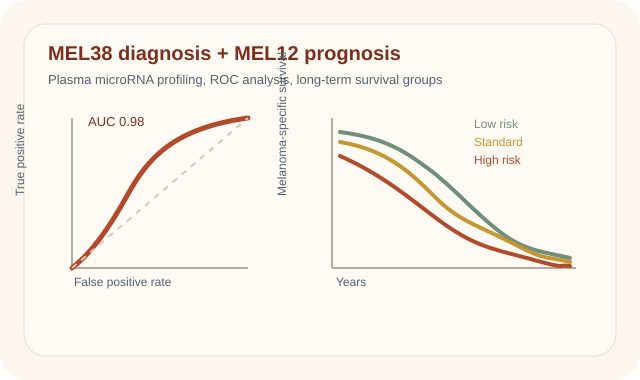
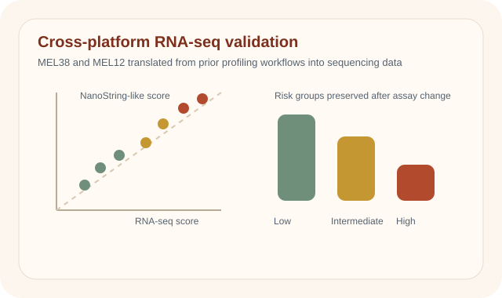
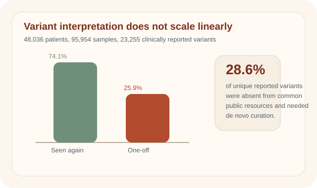
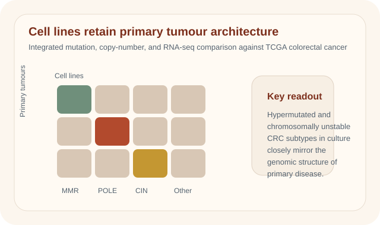
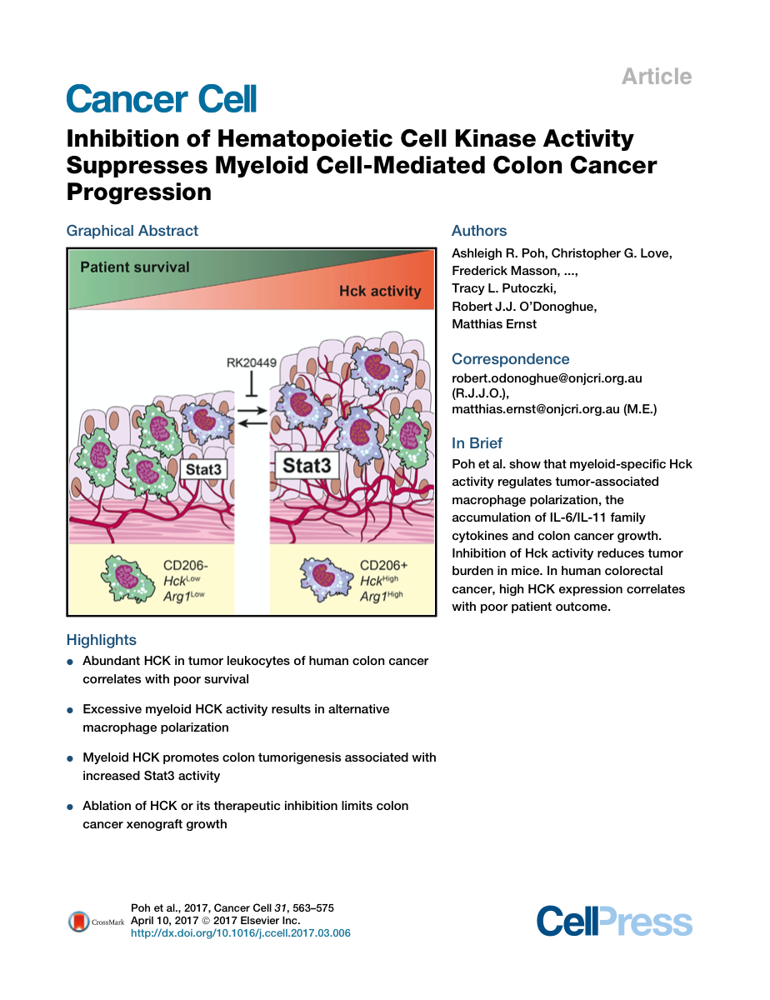
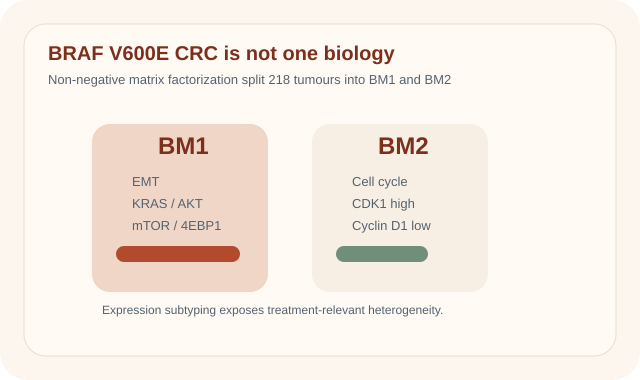
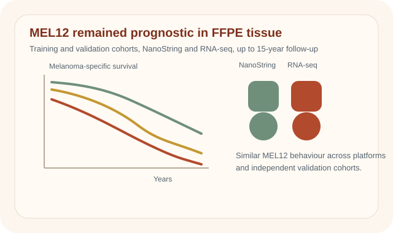
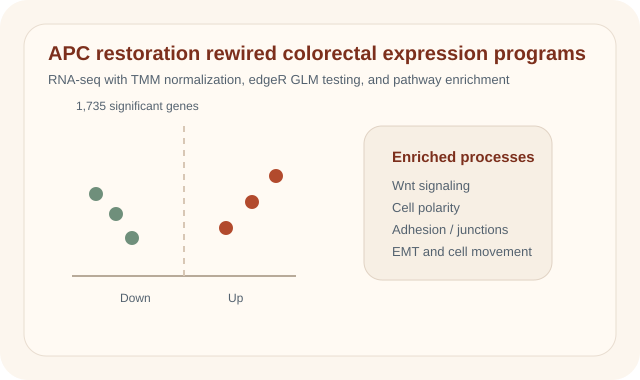
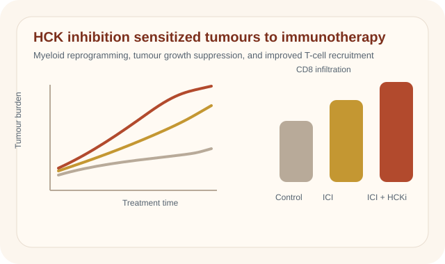

Summaries and representative figures

Representative plot: MEL38 diagnostic separation and MEL12 survival-risk stratification in plasma.
Validation of a microRNA liquid biopsy assay for diagnosis and risk stratification of invasive cutaneous melanoma
British Journal of Dermatology, 2023
This study centered on the bioinformatics validation of circulating microRNA signatures in a large multicentre plasma cohort. The work involved cohort-scale expression processing, score construction for MEL38 and MEL12, threshold optimisation, ROC analysis, predictive value estimation, and survival modelling against established clinicopathologic variables. The main contribution was showing that a reproducible microRNA analysis workflow could generate both diagnostic and prognostic signal from liquid biopsy data at clinically relevant scale.

Representative plot: MEL38 and MEL12 performance carried from NanoString-style discovery into RNA-seq validation.
RNA-seq validation of microRNA expression signatures for precision melanoma diagnosis and prognostic stratification
BMC Medical Genomics, 2024
This paper focused on cross-platform bioinformatics translation of melanoma microRNA signatures into RNA-seq data. Using plasma, FFPE tissue, and external cohorts, the analysis rebuilt MEL38 and MEL12 scoring in sequencing-derived expression space, normalized data across assay types, and benchmarked model performance against clinical covariates and published alternatives. The key contribution was demonstrating that the signal survived a change in measurement technology through careful feature definition, data harmonisation, and reproducible computational modelling.

Representative plot: recurrent versus one-off variants and the hidden curation burden from novel findings.
Findings from precision oncology in the clinic: rare, novel variants are a significant contributor to scaling molecular diagnostics
BMC Medical Genomics, 2022
This study examined the bioinformatics operational load created by high-throughput clinical sequencing in a real pathology setting. Across 48,036 cases, the work quantified variant recurrence, local knowledgebase reuse, the accumulation of novel findings, and the proportion of reportable variants missing from public resources. The main message is that scalable molecular diagnostics depends not just on sequencing itself, but on durable curation infrastructure, local evidence systems, and analyst workflows that can manage rare and previously unseen variation.

Representative plot: colorectal cancer cell lines recover the same major subtype structure seen in primary tumours.
Colorectal cancer cell lines are representative models of the main molecular subtypes of primary cancer
Cancer Research, 2014
This paper was built around multi-omic integration across exome sequencing, copy-number profiling, and RNA-seq in 70 colorectal cancer cell lines. The bioinformatics task was to align these data types with TCGA tumour cohorts and test whether cell lines preserve the subtype structure and pathway architecture seen in primary disease. The key contribution was a comparative genomics framework showing that widely used model systems retain major molecular classes closely enough to support downstream mechanistic and therapeutic analysis.

Graphical abstract from the paper PDF: HCK-driven myeloid activity is linked to poorer survival and colon cancer progression.
Inhibition of Hematopoietic Cell Kinase Activity Suppresses Myeloid Cell-Mediated Colon Cancer Progression
Cancer Cell, 2017
This Cancer Cell study combined tumour profiling, immune-state readouts, and outcome association to examine how HCK-driven myeloid biology supports colon cancer progression. From a bioinformatics perspective, the work integrated molecular measurements with survival and tumour-microenvironment signals to connect kinase activity, macrophage state, and disease behaviour. The contribution here is the computational interpretation layer that linked a myeloid regulatory program to a tractable therapeutic target.

Representative plot: BM1 and BM2 split a poor-prognosis genotype into two biologically different expression states.
BRAF V600E Mutant Colorectal Cancer Subtypes Based on Gene Expression
Clinical Cancer Research, 2017
This paper used gene-expression bioinformatics to resolve heterogeneity within BRAF V600E colorectal cancer. Applying non-negative matrix factorization to a large transcriptional cohort, the analysis defined two robust subtypes, BM1 and BM2, and connected them to distinct pathway programs including EMT, AKT-mTOR signalling, and cell-cycle regulation. The main contribution was an unsupervised classification framework that turned a single genotype into a more informative molecular taxonomy for downstream biological and therapeutic interpretation.

Representative plot: MEL12 preserved prognostic ranking across training, validation, and two profiling platforms.
Validation of a prognostic microRNA signature in early-stage melanoma across NanoString and RNA-sequencing platforms
EJC Skin Cancer, 2026
This work emphasized prognostic modelling and cross-platform robustness for the MEL12 microRNA signature in early-stage melanoma. The bioinformatics pipeline used principal-component based Cox regression, leave-one-out validation, frozen model transfer, and multivariable testing against standard clinicopathologic features across NanoString and RNA-seq datasets. The key result was that the prognostic signal remained stable under assay translation, highlighting the portability of a carefully defined genomic risk model.

Representative plot: APC restoration shifts expression programs tied to polarity, adhesion, Wnt signaling, and EMT.
Differential RNA-seq analysis comparing APC-defective and APC-restored SW480 colorectal cancer cells
Genomics Data, 2016
This publication is primarily a reproducible RNA-seq analysis resource. Using replicated sequencing, TMM normalisation, and edgeR generalized linear models, the work quantified transcriptomic changes after APC restoration in the SW480 colorectal cancer system and mapped those changes onto Wnt, EMT, polarity, adhesion, and migration pathways. Its bioinformatics value lies in making both the dataset and the differential-expression workflow explicit and reusable for downstream studies of APC biology.

Representative plot: HCK inhibition reshapes myeloid state, increases T-cell infiltration, and improves immunotherapy response.
Therapeutic inhibition of the SRC-kinase HCK facilitates T cell tumor infiltration and improves response to immunotherapy
Science Advances, 2022
This study combined tumour growth data, immune profiling, and treatment-response analysis to evaluate the systems-level consequences of HCK inhibition. The bioinformatics component involved integrating pathway perturbation with immune-cell composition and response phenotypes across multiple model settings, allowing myeloid reprogramming and T-cell infiltration to be interpreted quantitatively rather than descriptively. The result was a computationally supported translational picture of how kinase inhibition reshapes the tumour microenvironment to improve immunotherapy response.